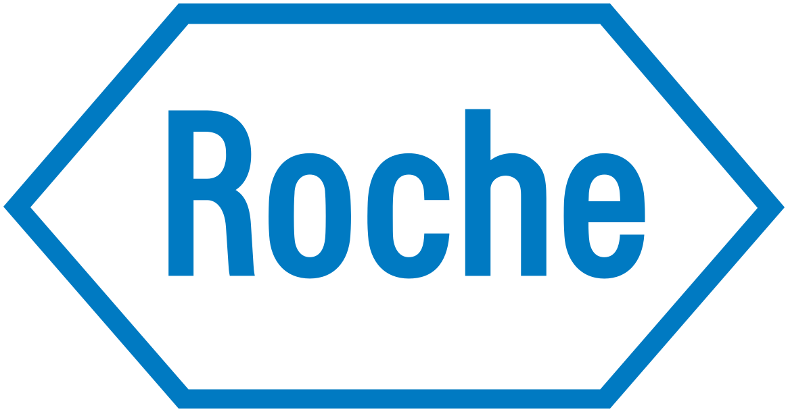

Razu Mohiuddin
Pushing the Boundaries of Physics with Advanced Data Techniques
Hi there!
I am an experimental particle astrophysics doctoral student at
Case Western Reserve University. I'm currently working in the
Monreal Lab and the Project 8 collaboration, pursuing my
research interests in statistical modeling, deep learning, and neutrino physics.
Research

The Project 8 experiment aims to measure the mass of the
neutrino, a subatomic particle with extremely low mass,
through the analysis of the beta decay of tritium atoms. The
experiment uses a novel technique called cyclotron radiation
emission spectroscopy (CRES) to measure the energy spectrum of
electrons emitted in the radioactive decay of tritium. By
measuring the energy distribution of the emitted electrons,
Project 8 aims to determine the absolute mass of neutrinos
with unprecedented precision.

Within the Project 8 Collaboration, I am working in a few
different projects. As part of the machine learning team, we
implemented deep convolutional neural network autoencoder
(U-Net based) to segment highly class-imbalanced spectrogram
images, improving efficiency over traditional methods by more
than 20%. I have pioneered a novel use of natural language
processing (NLP) techniques to identify complex patterns within noisy signals,
enabling signal detection in extremely low power situation.
Currently, I am exploring the use of physics-informed generative AI in reproducing
complicated electromagnetic signals from particle interactions.
I am also working with various simulation projects, including
resonant cavity mode filtering and manipulation, sensitivity analysis, etc.
Check out recent publications in the following section.
Past work
In the summer of 2024, I interned at Roche Diabetes Care Inc. in the Mathematics, Algorithms & Data Sciences Department, focusing on algorithms and advanced analytics. My responsibilities included:
- Using real-world data to develop virtual patient models
- Developing models for use in diabetes management tools for patients
- Assessment of novel techniques to reduce external dependencies
- Actively engaging with the project team to discuss the project goals, tasks and set priorities
- Performing independent data analysis and model building based on team priorities
- Reporting on findings to the project team, department and R&D
I worked with the Gravitational Wave International Committee (GWIC) and Community of Physics in the past.
Publications
"Deep learning based event reconstruction for cyclotron radiation emission spectroscopy"
Machine Learning: Sci. Technol.5 (2024) 025026
"Tritium Beta Spectrum and Neutrino Mass Limit from
Cyclotron Radiation Emission Spectroscopy "
PhysRevLett.131 (2023) 102502
"SYNCA: A Synthetic Cyclotron Antenna for the Project 8 Collaboration" JINST 18 (2023) 01, P01034
"Deep Learning based CRES track and event reconstruction in Project 8" APS DNP (2022)
"The Project 8 Neutrino Mass Experiment" 2022 Snowmass | arXiv: 2203.07349
"Viterbi decoding of CRES signals in Project 8" New J.Phys. 24 (2022) 5, 053013
"Bayesian analysis of a future β decay experiment's sensitivity to neutrino mass scale and ordering" Phys.Rev.C 103 (2021) 6, 065501
About
I am a graduate student in Physics at Case Western Reserve
University, where I am conducting research in the exciting field
of neutrino physics.
In addition to my academic pursuits, I am an avid photographer
with a deep passion for landscapes and architecture photography.
During my free time, if I am not working on a home or car project, I love spending my
time acquiring new skills. I enjoy immersing myself in reading,
exploring new realms through video games, and staying active
through sports like tennis, soccer, and basketball.
I’m always looking for ways to grow and stay engaged.
Contact
Feel free to contact me by emailing at

Mailing Address
Rock 118A
2076 Adelbert Road
Cleveland, OH 44106